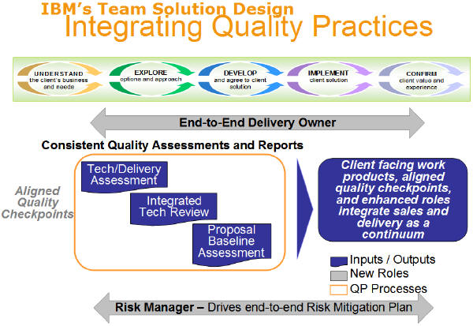

Depending on the risk and complexity of the project, there are several formal peer reviews that might be required:
Technical Delivery Assessment (consolidated with Solution Assurance), Integrated Technical Review, Proposal Baseline
Assessment and Project Management Review. The following chart shows the overall Quality Practices process and
governance with the timing of various reviews and delivery involvement. Specifically, in Team Solution Design,
the Pre-Bid Consulting and the Risk Manager, if assigned, become involved at Task: Conduct Viability Assessment, if not
sooner, in Activity: EXPLORE Options and Approach. TDA/SAR and ITR occur at Task:
Evaluate Integrated Solution in Activity: DEVELOP and Agree to Client Solution before the
solution is proposed to the client.

These reviews are held depending on size and complexity and will follow criteria that are set by the Quality Practices
for the Brand leading the proposal to the client.
Technical and Delivery Assessment
Purpose:
-
To provide a review of the solution to ensure that
-
The proposed solution will fulfill customer requirements, is technically viable and can be delivered by IBM
-
The estimates and schedules are complete and reasonable
-
The technical risks are identified, assessed and containment plans are in place
There are three components to this assessment:
-
Technical Assurance for the various components
-
Review of the overall solution
-
Commitment by the delivery organizations to perform the work as required by both Global and Local Delegations and
Business Rules
TDA Review details can be obtained from the TDA Guidebook.
Integrated Technical Review (for Multi-Brand or Cross-Geo opportunities)
Purpose:
-
To provide a review of the end-to-end solution for Cross-Geo and Multi-Brand solutions to ensure that
-
The complete proposed solution (the sum of all the technical components) will fulfill client requirements, is
technically viable, and can be delivered by IBM
-
The overall estimate and schedule is complete and reasonable once all technical components are considered
-
The technical risks are identified, assessed and a containment plan is in place.
There are four components to the Integrated Technical Review (ITR):
-
Assurance for the various technical components
-
Review of the end-to-end solution
-
Development of a final technical risk assessment
-
Development of a consolidated technical Risk Management Plan
Each Geo/Brand involved will be responsible for having a Technical and Delivery Assessment completed for its own
components. It is the responsibility of the owning Geo or Brand (one with the largest TCV) to have the Integrated
Technical Review being conducted. TDA output is required input to the Integrated Technical Review.
ITR details can be obtained from the ITR Guidebook.
Proposal Baseline Assessment
Purpose:
To identify and assist the proposal team in mitigating risks as part of a continuous work effort with the Proposal team
to reduce, contain and mitigate risks.
To provide an assessment of the overall solution and proposal to advise that:
-
The estimates and schedules are reasonable
-
The cost case is matches the functionality that we propose to the customer
-
The solution is designed to satisfy both IBM and customer requirements / expectations, business objectives and
conditions of satisfaction
-
The solution provides customer value as demonstrated by the value proposition explained in the customer materials
-
Delivery responsibilities, including cost responsibilities, are clearly defined among all delivery entities
involved, including multi-Brand and multi-Geo
-
Terms and Conditions are IBM standard or they are approved by Legal/C&N/GBS Business
-
The technical, business, and project risks are identified, assessed, and containment plans are in place
For cross geography opportunities, each of the geographies is responsible for performing the Proposal Baseline
Assessment on its components and supplying the lead geography Risk Management with the results of those assessments.
The lead geography Risk Management owner performs the overall assessment and provides a Proposal Baseline Assessment
Report to participating geography Risk Management.
Project Management Review
Purpose:
To provide an independent and objective assessment of the status of the project, issues, financial position,
and risks verifying that the project is:
-
Managed in accordance with the contractual commitment and project plan;
-
Meeting planned profitability; and
-
Satisfying the customer's requirements and expectations.
The initial review must be performed within 12 weeks from contract start, or start of delivery activities or completion
of Delivery Excellence Project Launch which includes the 45 day checkpoint. Subsequent reviews will be defined by Risk
Management based upon the health of the project, business transaction type, and Geography business rules. Maximum time
between reviews is 12 months.
Project Management Review Health Classifications:
|
Classification
|
Criteria
|
|
A
|
Project is under control. Minor problems may exist, but the Project Manager has an effective plan in place
to solve the problems. No major existing or potential problems have been identified.
|
|
B
|
Project is currently under control. However, existing or potential problems have been identified which will
require positive management attention in order to keep the project under control.
|
|
C
|
Significant problems currently exist which require corrective plans. Probability exists for exceeding
estimates or budgets, customer dissatisfaction, and/or limited financial exposure. Aggressive management
action is required to bring the project under control.
|
|
D
|
Major problems exist with definite, serious financial exposure and/or customer dissatisfaction.
|
|